직업상담사-2급 (2021-03-07 기출문제)
1과목: 직업상담학
1. Williamson이 분류한 직업선택의 주요 문제영역이 아닌 것은?
- 직업 무선택
- 직업선택의 확신 부족
- 정보의 부족
- 현명하지 못한 직업선택
(정답률: 80%)

2. 실존주의 상담에 관한 설명으로 옳은 것은?
- 인간은 과거와/환경에 의해 결정되는 것이 아니라 현재의 사고, 감정, 느낌, 행동의 전체성과 통합을 추구하는 존재이다.
- 인간은 자신의 삶 속에서 스스로를 불행하게 만드는 요인이 무엇인가를 이해할 수 있을 뿐만 아니라 자신의 나아갈 방향을 찾고 건설적인 변화를 이끌 수 있다.
- 치료가 상담목표가 아니라 내담자로 하여금 자신의 현재 상태에 대해 인식하고 피해자적 역할로부터 벗어날 수 있도록 돕는 것이다.
- 과거 사건에 대한 개인의 지각과 해석이 현재의 행동에 어떠한 영향을 미치는가에 중점을 두고 개인의 선택과 책임, 삶의 의미, 성공추구 등을 강조한다.
(정답률: 59%)
3. 상담 과정에서 상담자가 내담자에 게 질문하는 형식에 관한 설명으로 옳지 않은 것은?
- 간접적 질문보다는 직접적 질문이 더 효과적이다.
- 폐쇄적 질문보다는 개방적 질문이 더 효과적이다.
- 이중질문은 상담에서 도움이 되지 않는다.
- “왜”라는 질문은 가능하면 피해야 한다.
(정답률: 68%)
4. 자기인식이 부족한 내담자를 사정할 때인지에 대한 통찰을 재구조화하거나 발달시키는데 적합한 방법은?
- 직면이나 논리적 분석을 해준다.
- 불안에 대처하도록 심호흡을 시킨다.
- 은유나 비유를 사용한다.
- 사고를 재구조화 한다.
(정답률: 78%)
5. 직업상담의 기초 기법에 관한 설명으로 틀린 것은?
- 적극적 경청 : 내담자의 내면적 감정을 반영하는 것으로 이를 통해 내담자의 감정을 충분히 이해하고 수용할 수 있다.
- 명료화 : 내담자의 말 속에 포함되어 있는 불분명한 측면을 상담자가 분명하게 밝히는 반응이다.
- 수용 : 상담자가 내담자의 이야기에 주의를 집중하고 있고, 내담자를 인격적으로 존중하고 있음을 보여주는 기법이다.
- 해석 : 내담자가 새로운 방식으로 자신의 문제들을 볼 : 수 있도록 사건들의 의미를 설정해 주는 것이다.
(정답률: 55%)
6. 정신역동적 직업상담에서 Bordin이 제시한 상담자의 반응범주에 해당하지 않는 것은?
- 소망-방어체계
- 비교
- 명료화
- 진단
(정답률: 76%)
7. 생애진로사정의 구조 중 전형적인 하루에서 검토되어야 할 성격차원은?
- 의존적-독립적 성격차원
- 판단적-인식적 성격차원
- 외향적-내성적 성격차원
- 감각적-직관적 성격차원
(정답률: 80%)
8. 직업상담의 기본 원리에 대한 설명으로 틀린 것은?
- 직업상담은 개인의 특성을 객관적으로 파악한 후, 직업상담자와 내담자 간의 신뢰관계(rapport)를 형성한 뒤에 실시하여야 한다.
- 직업상담에 있어서 가장 핵심적인 요소는 개인의 심리적·정서적 문제의 해결이다.
- 직업상담은 진로발달이론에 근거하여야 한다.
- 직업상담은 각종 심리검사를 활용하여 그 결과를 기초로 합리적인 결과를 끌어낼 수 있어야 한다.
(정답률: 69%)
9. 다음은 무엇에 관한 설명인가?
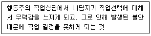
- 무결단성
- 우유부단
- 미결정성
- 부적응성
(정답률: 62%)
10. 발달적 직업상담에 관한 설명으로 틀린 것은?
- 내담자의 직업 의사결정문제와 직업 성숙도 사이의 일치성에 초점을 둔다.
- 내담자의 진로발달과 함께 일반적 발달 모두를 향상시키는 것을 목표로 하고 있다.
- 정밀검사는 특성-요인 직업상담처럼 직업상담의 초기에 내담자에게 종합진단을 실시하는 것이다.
- 직업상담사가 사용할 수 있는 기법에는 진로 자서전과 의사결정 일기가 있다.
(정답률: 53%)
11. 다음은 어떤 직업상담 접근방법에 관한 설명인가?
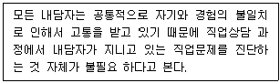
- 내담자 중심 직업상담
- 특성-요인 직업상담
- 정신 역동적 직업상담
- 행동주의 직업상담
(정답률: 64%)
12. 성공적인 상담결과를 위한 상담목표의 특징으로 옳지 않은 것은?
- 변화될 수 없으며 구체적이어야 한다.
- 실현가능해야 한다.
- 내담자가 원하고 바라는 것이어야 한다.
- 상담자의 기술과 양립 가능해야만 한다.
(정답률: 82%)
13. 자기보고식 가치사정법이 아닌 것은?
- 과거의 선택 회상하기
- 존경하는 사람 기술하기
- 난관을 극복한 경험 기술하기
- 백일몽 말하기
(정답률: 57%)
14. Herr가 제시한 직업상담사의 직무내용에 해당되지 않는 것은?
- 상담자는 특수한 상담기법을 통해서 내담자의 문제를 확인하도록 한다.
- 상담자는 좋은 결정을 가져오기 위한 예비행동을 설명한다.
- 직업선택이 근본적인 관심사인 내담자에 대해서는 직업상담 실시를 보류하도록 한다.
- 내담자에 관한 부가적 정보를 종합한다.
(정답률: 82%)
15. 포괄적 직업상담에 관한 설명으로 틀린 것은?
- 논리적인 것과 경험적인 것을 의미 있게 절충시킨 모형이다.
- 진단은 변별적이고 역동적인 성격을 가지고 있다.
- 상담의 진단단계에서는 주로 특성-요인 이론과 행동주의 이론으로 접근한다.
- 문제해결 단계에서는 도구적(조작적) 학습에 초점을 맞춘다.
(정답률: 51%)
16. 대안개발과 의사결정 시 사용하는 인지적 기법으로 다음 설명에 해당하는 인지치료 과정의 단계는?
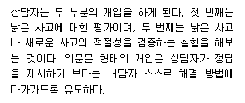
- 2단계
- 3단계
- 4단계
- 5단계
(정답률: 62%)
17. 직업상담사의 윤리에 관한 설명으로 옳은 것은?
- 내담자 개인 및 사회에 임박한 위험이 있다고 판단되더라도 개인정보와 상담내용에 대한 비밀을 유지해야 한다.
- 자기와 능력 및 기법의 한계를 넘어서는 문제에 대해서는 다른 전문가에게 의뢰해야 한다.
- 심층적인 심리상담이 아니므로 직업상담은 비밀 유지 의무가 없다.
- 상담을 통해 내담자가 도움을 받지 못하더라도 내담자보다 먼저 종결을 제안해서는 안 된다.
(정답률: 81%)
18. 다음 상담 장면에서 나타난 진로상담에 대한 내담자의 잘못된 인식은?
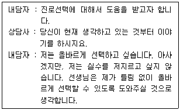
- 진로상담의 정확성에 대한 오해
- 일회성 결정에 대한 편견
- 적성·심리검사에 대한 과잉신뢰
- 흥미와 능력개념의 혼동
(정답률: 62%)
19. 엘리스(Ellis)가 개발한 인지적-정서적 상담에서 정서적이고 행동적인 결과를 야기하는 것은?
- 선행사건
- 논박
- 신념
- 효과
(정답률: 60%)
20. 특성-요인 상담의 특징으로 옳지 않은 것은?
- 상담자 중심의 상담방법 이다.
- 문제의 객관적 이해보다는 내담자에 대한 정서적 이해에 중점을 둔다.
- 내담자에 게 정보를 제공하고 학습기술과 사회적 적응기술을 알려주는 것을 중요시 한다.
- 사례연구를 상담의 중요한 자료로 삼는다.
(정답률: 61%)
2과목: 직업심리학
21. 검사의 구성타당도 분석방법으로 적합하지 않은 것은?
- 기대표 작성
- 확인적 요인분석
- 관련 없는 개념을 측정하는 검사와의 상관계수 분석
- 유사한 특성을 측정하는 기존 검사와의 상관계수 분석
(정답률: 55%)
22. 직무수행 관련 성격 5요인(Big 5) 모델의 요인이 아닌 것은?
- 외향성
- 친화성
- 성실성
- 지배성
(정답률: 66%)
23. 탈진 (burnout)에 관한 설명 으로 옳지 않은 것은?
- 종업원들이 일정 기간 동안 직무를 수행한 후 경험하는 지친 심리적 상태를 의미한다.
- 탈진검사는 정서적 고갈, 인격 상실, 개인적 성취감 감소 등의 세 가지 구성요소로 측정 한다.
- 탈진에 대한 연구는 대부분 면접과 관찰을 통해 이루어졌다.
- 탈진 경험은 다양한 직무 스트레스 요인과 직무 스트레스 반응 변인과 상관이 있다.
(정답률: 68%)
24. 미네소타 직업분류체계 Ⅲ와 관련하여 발전한 직업발달 이론은?
- Krumboltz의 사회학습이론
- Super의 평생발달이론
- Ginzberg의 발달이론
- Lofquist와 Dawis의 직업적응이론
(정답률: 67%)
25. 홀랜드(Holland) 이론의 직업환경 유형과 대표 직업 간 연결이 틀린 것은?
- 현실형(R) - 목수, 트럭운전사
- 탐구형(I) - 심리학자, 분자공학자
- 사회형(S) - 정치가, 사업가
- 관습형 (C) - 사무원, 도서관 사서
(정답률: 71%)
26. 경력개발 프로그램 중 종업원 역량개발 프로그램과 가장 거리가 먼 것은?
- 훈련 프로그램
- 사내공모제
- 후견인 프로그램
- 직무순환
(정답률: 51%)
27. 직무분석을 통해 작성되는 결과물로서, 해당 직무를 수행하는 작업자가 갖추어야 할 자격요건을 기록한 것은?
- 직무 기술서(job description)
- 직무 명세서(job specification)
- 직무 프로파일(job profile)
- 직책 기술서(position description)
(정답률: 60%)
28. 파슨스(Parsons)가 강조하는 현명한 직업 선택을 위한 필수 요인이 아닌 것은?
- 자신의 흥미, 적성, 능력, 가치관 등 내면적인 자신에 대한 명확한 이해
- 현대사회가 필요로 하는 전망이 밝은 분야에서의 취업을 위한 구체적인 준비
- 직업에서의 성공, 이점, 보상, 자격요건, 기회 등 직업 세계에 대한 지식
- 개인적인 요인과 직업 관련 자격요건, 보수 등의 정보를 기초로 한 현명한 선택
(정답률: 65%)
29. 다운사이징(downsizing)과 조직구조의 수평화로 대변되는 최근의 조직변화에 적합한 종업원 경력개발 프로그램에 관한 설명으로 가장 거리가 먼 것은?
- 직무를 통해서 다양한 능력을 본인 스스로 학습할 수 있도록 많은 프로젝트에 참여 시킨다.
- 표준화된 작업규칙, 고정된 작업시간, 엄격한 직무기술을 강화한 학습 프로그램에 참여 시킨다.
- 불가피하게 퇴직한 사람들을 위한 퇴직자 관리 프로그램을 운영한다.
- 새로운 직무를 수행하는데 요구되는 능력 및 지식과 관련된 재교육을 실시한다.
(정답률: 64%)
30. 과업지향적 직무분석 방법 중 기능적 직무분석의 세 가지 차원이 아닌 것은?
- 기술(skill)
- 자료(data)
- 사람(people)
- 사물(things)
(정답률: 66%)
31. 신뢰도의 종류 중 검사 내 문항들 간의 동질성을 나타내는 것은?
- 동등형 신뢰도
- 내적일치 신뢰도
- 검사-재검사 신뢰도
- 평가자 간 신뢰도
(정답률: 43%)
32. 조직에서 자신이 생각하는 역할과 상급자가 생각하는 역할 간 차이에 기인한 스트레스원은?
- 역할 과다
- 역할 모호성
- 역할 갈등
- 과제 곤란도
(정답률: 70%)
33. 직업상담 장면에서 활용 가능한 성격검사에 관한 설명으로 옳은 것은?
- 특정 분야에 대한 흥미를 측정 한다.
- 어떤 특정 분야나 영역의 숙달에 필요한 적응능력을 측정한다.
- 대개 자기보고식 검사이며, 널리 이용되는 검사는 다면적 인성검사, 성격유형 검사 등이 있다.
- 비구조적 과제를 제시하고 자유롭게 응답 하도록 하여 분석하는 방식으로 웩슬러 검사가 있다.
(정답률: 59%)
34. 로(Roe)의 욕구이론에 관한 설명으로 옳은 것은?
- 부모-자녀 간의 상호작용을 자녀에 대한 정서집중형, 회피형, 수용형의 유형으로 구분한다.
- 청소년기 부모-자녀 간의 관계에서 생긴 욕구가 직업선택에 영향을 미친다는 이론이다.
- 부모의 사랑을 제대로 받지 못하고 거부적인 분위기에서 성장한 사람은 다른 사람들과 함께 일하고 접촉하는 서비스 직종의 직업을 선호한다.
- 직업군을 10가지로 분류한다.
(정답률: 55%)
35. 홀랜드(Holland)의 성격이론에서 제시한 유형 중 일관성이 가장 낮은 것은?
- 현실적(R) - 탐구적(I)
- 예술적(A) - 관습적(C)
- 설득적(E) - 사회적(S)
- 사회적(S) - 예술적(A)
(정답률: 71%)
36. 인지적 정보처리 이론에서 제시하는 의사결정 과정의 절차를 바르게 나열한 것은?
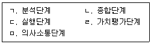
- ㄱ → ㄴ → ㄷ → ㄹ → ㅁ
- ㄴ → ㄹ → ㄱ → ㄷ → ㅁ
- ㄷ → ㄱ → ㄴ → ㅁ → ㄹ
- ㅁ → ㄱ → ㄴ → ㄹ → ㄷ
(정답률: 49%)
37. 수퍼(Super)의 발달이론에 관한 설명으로 옳은 것은?
- 대부분의 사람들을 여섯 가지 유형 중 하나로 분류한다.
- 개인분석, 직업분석, 과학적 조언의 조화를 주장한다.
- 생애역할의 중요성과 직업적 자아개념을 강조한다.
- 부모의 자녀 양육방식 을 발달적 으로 전개한다.
(정답률: 62%)
38. 다음 중 규준의 범주에 포함될 수 없는 점수는?
- 표준점수
- Stanine 점수
- 백분위 점수
- 표집점수
(정답률: 58%)
39. 직무 및 일반 스트레스에 관한 설명으로 옳지 않은 것은?
- 17-OHCS라는 당류부신피질 호르몬은 스트레스의 생리적 기표로서 매우 중요하게 사용된다.
- A성격 유형이 B성격 유형보다 더 높은 스트레스 수준을 유지한다.
- Yerkes와 Dodson의 역U자형 가설은 스트레스 수준이 적당하면 작업능률도 최대가 된다고 한다.
- 일반적응증후군(GAS)에 따르면 저항단계, 경고단계, 탈진단계를 거치면서 사람에게 나쁜 결과를 가져다준다.
(정답률: 61%)
40. 심리검사의 유형 중 객관적 검사의 장점이 아닌 것은?
- 검사실시의 간편성
- 객관성의 증대
- 반응의 풍부함
- 높은 신뢰도
(정답률: 73%)
3과목: 직업정보론
41. 워크넷에서 제공하는 청소년 직업흥미검사의 하위척도가 아닌 것은?
- 활동척도
- 자신감척도
- 직업척도
- 가치관척도
(정답률: 50%)
42. 한국표준직업분류(제7차)에서 표준직업 분류와 직능수준과의 관계가 옳지 않은 것은?
- 관리자 : 제4직능 수준 혹은 제3직능 수준 필요
- 전문가 및 관련 종사자 : 제4직능 수준. 혹은 제3직능 수준 필요
- 군인 : 제1직능 수준 이상 필요
- 단순노무 종사자 : 제1직능 수준 필요
(정답률: 74%)
43. 직업정보를 제공하는 유형별 방식의 설명이다. ( )에 알맞은 것은?
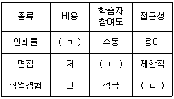
- ㄱ : 고, ㄴ : 적극, ㄷ : 용이
- ㄱ : 고, ㄴ : 수동, ㄷ : 제한적
- ㄱ : 저, ㄴ : 적극, ㄷ : 제한적
- ㄱ : 저, ㄴ : 수동, ㄷ : 용이
(정답률: 73%)
44. 국민내일배움카드의 지원대상에 해당하지 않는 것은?
- 「한부모가족지원법」에 따른 지원대상자
- 「고용보험법 시행령」에 따른 기간제근로자인 피보험자
- 「수산업·어촌 발전 기본법」에 따른 어업인으로서 어업 이외의 직업에 취업하려는 사람
- 만 75세 이상인 사람
(정답률: 69%)
45. 한국표준산업분류(제10차)의 적용원칙에 관한 설명으로 틀린 것은?
- 산업활동이 결합되어 있는 경우에는 그 활동단위의 주된 활동에 따라서 분류
- 생산단위는 산출물만을 토대로 가장 정확하게 설명된 항목에 분류
- 복합적인 활동단위는 우선적으로 최상급 분류단계(대분류)를 정확히 결정하고, 순차적으로 중, 소, 세, 세세분류 단계 항목을 결정
- 수수료 또는 계약에 의히여 활동을 수행하는 단위는 자기계정과 자기책임 하에서 생산하는 단위와 동일항목으로 분류
(정답률: 64%)
46. 직업정보 수집방법으로서 면접법에 관한 설명으로 가장 적합하지 않은 것은?
- 표준화 면접은 비표준화 면접보다 타당도가 높다.
- 면접법은 질문지법보다 응답범주의 표준화가 어렵다.
- 면접법은 질문지법보다 제3자의 영향을 배제할 수 있다.
- 표준화 면접에는 개방형 및 폐쇄형 질문을 모두 사용할 수 있다.
(정답률: 41%)
47. 한국표준산업분류(제10차)의 산업결정방법에 관한 설명으로 틀린 것은?
- 생산단위의 산업 활동은 그 생산단위가 수행하는 주된 산업 활동의 종류에 따라 결정된다.
- 계절에 따라 정기적으로 산업을 달리하는 사업체의 경우에는 조사시점에 경영하는 사업과는 관계없이 조사대상 기간 중 산출액이 많았던 활동에 의하여 분류된다.
- 단일사업체의 보조단위는 그 사업체의 일개 부서로 포함하지 않고 별도의 사업체로 처리한다.
- 휴업 중 또는 자산을 청산 중인 사업체의 산업은 영업 중 또는 청산을 시작하기 이전의 산업활동에 의하여 결정한다.
(정답률: 65%)
48. 공공직 업 정보와 비교한 민간직업 정보의 일반적 특성에 관한 설명으로 틀린 것은?
- 필요한 시기에 최대한 활용되도록 한시적으로 신속하게 생산되어 운영된다.
- 국제적으로 인정되는 객관적인 기준에 근거하여 직업을 분류한다.
- 특정한 목적에 맞게 해당 분야 및 직종을 제한적으로 선택한다.
- 시사적인 관심이나 흥미를 유도할 수 있도록 해당 직업을 분류한다.
(정답률: 69%)
49. 국가기술자격 직업상담사 1급 응시자격 으로 옳은 것은?
- 해당 실무에 2년 이상 종사한 사람
- 해당 실무에 3년 이상 종사한 사람
- 관련학과 대학졸업자 및 졸업예정자
- 해당 종목의 2급 자격을 취득한 후 해당 실무에 1년 이상 종사한 사람
(정답률: 50%)
50. 한국표준산업분류(제10차) 주요 개정내용으로. 틀린 것은?
- 어업에서 해수면은 해면으로, 수산 종자는 수산 종묘로 명칭을 변경
- 수도업은 국내 산업 연관성을 고려하고 국제표준산업분류(ISIC)에 맞춰 대분류 E로 이동
- 산업 성장세를 고려하여 태양력 발전업을 신설
- 세분류에서 종이 원지·판지·종이상자 도매업, 면세점, 의복 소매업을 신설
(정답률: 44%)
51. 다음은 어떤 국가기술자격 등급의 검정기준에 해당하는가?
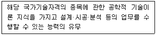
- 기능장
- 기사
- 산업기사
- 기능사
(정답률: 58%)
52. 직업정보 수집·제공 시 고려해야 할 사항과 가장 거리가 먼 것은?
- 명확한 목표를 가지고 계획적으로 수집한다.
- 최신의 자료를 수집한다.
- 자료를 수집할 때 자료출처와 일자를 기록한다.
- 직업정보는 전문성이 있으므로 전문용어를 사용하여 제공한다.
(정답률: 76%)
53. 직업훈련의 강화에 따른 효과로 가장 거리가 먼 것은?
- 인력부족 직종의 구인난을 완화시킬 수 있다.
- 재직근로자의 직무능력을 높일 수 있다.
- 산업구조의 변화에 대응할 수 있다.
- 마찰적인 실업을 줄일 수 있다.
(정답률: 57%)
54. 국가기술자격종목과 그 직무분야의 연결이 틀린 것은?
- 직업상담사2급 - 사회복지·종교
- 소비자전문상담사2급 - 경영·회계·사무
- 임상심리사2급 - 보건·의료
- 컨벤션기획사2급 - 이용·숙박·여행·오락·스포츠
(정답률: 56%)
55. 한국직업사전(2020)의 부가정보 중 "자료"에 관한 설명으로 틀린 것은?
- 종합 : 사실을 발견하고 지식개념 또는 해석을 개발하기 위해 자료를 종합적으로 분석한다.
- 분석 : 조사하고 평가한다. 평가와 관련된 대안적 행위의 제시가 빈번하게 포함된다.
- 계산 : 사칙연산을 실시하고 사칙연산과 관련하여 규정된 활동을 수행하거나 보고한다. 수를 세는 것도 포함된다.
- 기록 : 데이터를 옮겨 적거나 입력하거나 표시한다.
(정답률: 59%)
56. 다음은 무엇에 대한 설명인가?
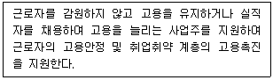
- 실업급여사업
- 고용안정사업
- 취업알선사업
- 직업상담사업
(정답률: 77%)
57. 직업정보 조사를 위한 설문지 작성법과 거리가 가장 먼 것은?
- 이중질문은 피한다.
- 조사주제와 직접 관련이 없는 문항은 줄인다.
- 응답률을 높이기 위해 민감한 질문은 앞에 배치한다.
- 응답의 고정반응을 피하도록 질문형식을 다양화한다.
(정답률: 77%)
58. 한국표준직업분류(제7차)에서 포괄적인 업무에 대한 직업분류원칙에 해당하는 것은?
- 최상급 직능수준 우선 원칙
- 포괄성의 원칙
- 취업시간 우선의 원칙
- 조사 시 최근의 직업 원칙
(정답률: 59%)
59. 워크넷(직업·진로)에서 제공하는 정보가 아닌 것은?
- 학과정보
- 직업동영상
- 직업심리검사
- 국가직무능력표준(NCS)
(정답률: 56%)
60. 직업정보의 처리단계를 옳게 나열한 것은?
- 분석 → 가공 → 수집 → 체계화 → 제공 → 축적 → 평가
- 수집 → 분석 → 체계화 → 가공 → 축적 → 제공 → 평가
- 분석 → 수집 → 가공 → 체계화 → 축적 → 제공 → 평가
- 수집 → 분석 → 가공 → 체계화 → 제공 → 축적 → 평가
(정답률: 64%)
4과목: 노동시장론
61. 다음은 어떤 숍제도에 관한 설명인가?
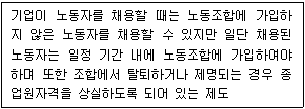
- 클로즈드숍(closed shop)
- 오픈숍(open shop)
- 에이전시숍(agency shop)
- 유니온숍(union shop)
(정답률: 63%)
62. 노동 수요측면에서 비정규직 증가의 원인과 가장 거리가 먼 것은?
- 세계화에 따른 기업 간 경쟁 환경의 변화
- 정규직 근로자 해고의 어려움
- 고학력 취업자의 증가
- 정규노동자, 고용비용의 증가
(정답률: 62%)
63. 시장경제를 채택하고 있는 국가의 노동시장에서 직종별 임금 격차가 존재하는 이유와 가장 거리가 먼 것은?
- 직종 간 정보의 흐름이 원활하기 때문이다.
- 직종에 따라 근로환경의 차이가 존재하기 때문이다.
- 직종에 따라 노동조합 조직율의 차이가 존재하기 때문이다.
- 노동자들의 특정 직종에 대한 회피와 선호가 다르기 때문이다.
(정답률: 65%)
64. 다음 중 산업민주화 정도가 가장 높은 형태의 기업은?
- 노동자 자주관리 기업
- 노동자 경영참여 기업
- 전문경영인 경영 기업
- 중앙집권적 기업
(정답률: 58%)
65. 내국인들이 취업하기를 기피하는 3D 직종에 대해 외국인력의 수입 또는 불법 이민이 국내 내국인 노동시장에 미치는 영향으로 옳은 것은?
- 임금과 고용이 높아진다.
- 임금과 고용이 낮아진다.
- 임금은 높아지고 고용은 낮아진다.
- 임금과 고용의 변화가 없다.
(정답률: 67%)
66. 다음 중 수요부족실업에 해당되는 것은?
- 마찰적 실업
- 구조적 실업
- 계절적 실업
- 경기적 실업
(정답률: 59%)
67. 케인즈(Keynes)의 실업이론에 관한 설명으로 틀린 것은?
- 노동의 공급은 실질임금의 함수이며, 노동에 대한 수요는 명목임금의 함수이다.
- 노동자들은 화폐환상을 갖고 있어 명목임금의 하락에 저항하므로 명목임금은 하방경직성을 갖는다.
- 비자발적 실업의 원인을 유효수요의 부족으로 설명하였다.
- 실업의 해소방안으로 재정투융자의 확대, 통화량의 증대 등을 주장하였다.
(정답률: 34%)
68. 파업의 경제적 비용과 기능에 관한 설명으로 옳은 것은?
- 사적 비용과 사회 적 비용은 동일하다.
- 사용자의 사적비용은 직접적인 생산중단에서 오는 이윤의 순감소분과 같다.
- 사적비용이란 경제의 한 부문에서 발생한 파업으로 인한 타 부문에서의 생산 및 소비의 감소를 의미한다.
- 서비스 산업부문은 파업에 따른 사회적 비용이 상대적으로 큰 분야이다.
(정답률: 64%)
69. 임금-물가 악순환설, 지불능력설, 한계생산력설 등에 영향을 미친 임금결정이론은?
- 임금생존비설
- 임금철칙설
- 노동가치설
- 임금기금설
(정답률: 53%)
70. 임금체계에 대한 설명으로 틀린 것은?
- 직무급은 조직의 안정화에 따른 위계질서 확립이 용이하다는 장점이 있다.
- 연공급의 단점 중 하나는 직무성과와 관련 없는 비합리적인 인건비 지출이 생긴다는 점이다.
- 직능급은 직무수행능력을 기준으로 하여 각 근로자의 임금을 결정하는 임금체계이다.
- 연공급의 기본적인 구조는 연령, 근속, 학력, 남녀별 요소에 따라 임금을 결정하는 것으로 정기승급의 축적에 따라 연령별로 필요생계비를 보장해 주는 원리에 기초하고 있다.
(정답률: 53%)
71. 노동조합의 기능에 대한 설명으로 틀린 것은?
- 임금을 인상시키는 기능을 수행한다.
- 근로조건을 개선하는 기능을 한다.
- 각종 공제활동 및 복지활동을 할 수 있다.
- 특정 정당과 연계하여 정치적 영향력을 발휘할 수 없다.
(정답률: 64%)
72. 다음 중 분단노동시장 이론과 가장 거리가 먼 것은?
- 빈곤퇴치를 위한 정책적인 노력이 쉽게 성공하지 못하고 있다.
- 내부노동시장과 외부노동시장은 현격하게 다른 특성을 갖는다.
- 근로자는 임금을 중심으로 경쟁하는 것이 아니라 직무를 중심으로 경쟁하기도 한다.
- 고학력 실업자가 증가하면 단순노무직의 임금도 하락한다.
(정답률: 49%)
73. 다음 중 성과급 제도의 장점에 해당하는 것은?
- 직원 간 화합이 용이하다.
- 근로의 능률을 자극할 수 있다.
- 임금의 계산이 간편하다.
- 확정적 임금이 보장된다.
(정답률: 74%)
74. 이윤극대화를 추구하는 어떤 커피숍 종업원의 임금은 시간당 6,000원이고, 커피 1잔의 가격은 3,000원일 때 이 종업원의 한계생산은?
- 커피 1잔
- 커피 2잔
- 커피 3잔
- 커피 4잔
(정답률: 73%)
75. 기혼여성의 경제활동참가율은 60%이고 실업률은 20%일 때, 기혼여성의 고용률은?
- 12%
- 48%
- 56%
- 86%
(정답률: 63%)
76. 숙련 노동시장과 비숙련 노동시장이 완전히 단절되어 있다고 할 때 비숙련 외국근로자의 유입에 따라 가장 큰 피해를 입는 집단은?
- 국내 소비자
- 국내 비숙련공
- 노동집약적 기업주
- 기술집약적 기업주
(정답률: 71%)
77. 임금이 하방경직적인 이유와 가장 거리가 먼 것은?
- 장기노동계약
- 물가의 지속적 상승
- 강력한 노동조합의 존재
- 노동자의 역선택 발생 가능성
(정답률: 32%)
78. 만일 여가(leisure)가 열등재라면, 임금이 증가할 때 노동공급은 어떻게 변하는가?
- 임금수준에 상관없이 임금이 증가할 때 노동공급은 감소한다.
- 임금수준에 상관없이 임금이 증가할 때 노동공급은 증가한다.
- 낮은 임금수준에서 임금이 증가할 때는 노동공급이 증가하다가 임금수준이 높아지면 임금증가는 노동공급을 감소시킨다.
- 낮은 임금수준에서 임금이 증가할 때는 노동공급이 감소하다가 임금수준이 높아지면 임금증가는 노동공급을 증가시킨다.
(정답률: 44%)
79. 기업특수적 인적자본형성의 원인이 아닌 것은?
- 기업 간 차별화된 제품생산
- 생산공정의 특유성
- 생산장비의 특유성
- 일반적 직업훈련의 차이
(정답률: 57%)
80. 마찰적 실업을 해소하기 위한 정책이 아닌 것은?
- 구인 및 구직에 대한 전국적 전산망 연결
- 직업안내와 직업상담 등 직업알선기관에 의한 효과적인 알선
- 고용실태 및 전망에 관한 자료제공
- 노동자의 전직과 관련된 재훈련 실시
(정답률: 63%)
5과목: 노동관계법규
81. 다음 ( )에 알맞은 것은?
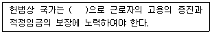
- 법률적 방법
- 사회적 방법
- 경제적 방법
- 사회적·경제적 방법
(정답률: 65%)
82. 근로자직업능력개발법상 직업능력개발훈련의 기본원칙으로 명시되지 않은 것은?
- 직업능력개발훈련은 근로자 개인의 희망·적성·능력에 맞게 근로자의 생애에 걸쳐 체계적으로 실시되어야 한다.
- 직업능력개발훈련은 민간의 자율과 창의성이 존중되도록 하여야 하며 노사와 참여와 협력을 바탕으로 실시되어야 한다.
- 제조업의 생산직에 종사하는 근로자의 직업능력개발훈련은 중요시되어야 한다.
- 직업능력개발훈련은 근로자의 직무능력과 고용가능성을 높일 수 있도록 지역·산업현장의 수요가 반영되어야 한다.
(정답률: 64%)
83. 근로기준법령상 고용노동부 장관에게 경영상의 이유에 의한 해고계획의 신고를 할 때 포함해야 하는 사항이 아닌 것은?
- 퇴직금
- 해고 사유
- 해고 일정
- 근로자대표와 협의한 내용
(정답률: 63%)
84. 고용상 연령차별금지 및 고령자고용촉진에 관한 법령상 제조업의 고령자 기준고용률은?
- 그 사업장의 상시 근로자 수의 100분의 2
- 그 사업장의 상시 근로자 수의 100분의 3
- 그 사업장의 상시 근로자 수의 100분의 4
- 그 사업장의 상시 근로자 수의 100분의 6
(정답률: 65%)
85. 남녀고용평등과 일·가정 양립 지원에 관한 법령상 육아휴직에 관한 설명으로 틀린 것은?
- 육아휴직의 기간은 1년 이내로 한다.
- 육아휴직 기간은 근속기간에 포함한다.
- 기간제근로자의 육아휴직 기간은 사용기간에 포함된다.
- 육아휴직 기간에는 그 근로자를 해고하지 못한다.
(정답률: 67%)
86. 근로자퇴직급여 보장법령상 퇴직금의 중간정산 사유에 해당하지 않는 것은?
- 무주택자인 근로자가 본인 명의로 주택을 구입하는 경우
- 사용자가 기존의 정년을 보장하는 조건으로 단체협약을 통하여 일정 나이를 기준으로 임금을 줄이는 제도를 시행하는 경우
- 3개월 이상 요양을 필요로 하는 근로자 배우자의 질병에 대한 의료비를 해당 근로자가 본인 연간 임금총액의 1천분의 115를 초과하여 부담하는 경우
- 퇴직금 중간정산을 신청하는 날부터 거꾸로 계산하여 5년 이내에 근로자가 「채무자 회생 및 파산에 관한 법률」에 따라 파산선고를 받은 경우
(정답률: 49%)
87. 고용보험법령상 육아휴직 급여에 관한 설명이다. ( ) 안에 들어갈 내용이 옳게 연결된 것은?
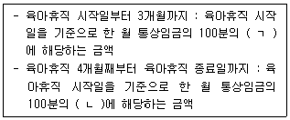
- ㄱ : 60, ㄴ : 30
- ㄱ : 70, ㄴ : 50
- ㄱ : 80, ㄴ : 30
- ㄱ : 80, ㄴ : 50
(정답률: 51%)
88. 직업안정법령상 근로자공급사업에 관한 설명으로 틀린 것은?
- 누구든지 고용노동부장관의 허가를 받지 아니하고는 근로자공급사업을 하지 못한다.
- 국내 근로자공급사업은 「노동조합 및 노동관계조정법」에 따른 노동조합만이 허가를 받을 수 있다.
- 국외 근로자공급사업을 하려는 자는 1천만원 이상의 자본금만 갖추면 된다.
- 근로자공급사업 허가의 유효기간은 3년으로 한다.
(정답률: 56%)
89. 남녀고용평등과 일·가정 양립 지원에 관한 법령상 배우자 출산휴가에 관한 설명으로 틀린 것은?
- 사업주는 근로자가 배우자 출산휴가를 청구하는 경우에 10일의 휴가를 주어야 한다.
- 사용한 배우자 출산휴가기간은 유급으로 한다.
- 배우자 출산휴가는 근로자의 배우자가 출산한 날부터 30일이 지나면 청구할 수 없다.
- 배우자 출산휴가는 1회에 한정하여 나누어 사용할 수 있다.
(정답률: 58%)
90. 고용보험법령상 심사 및 재심사청구에 관한 설명으로 옳지 않은 것은?
- 실업급여에 관한 처분에 이의가 있는 자는 고용보험심사관에게 심사를 청구할 수 있다.
- 심사 및 재심사의 청구는 시효중단에 관하여 재판상의 청구로 본다.
- 재심사청구인은 법정대리인 외에 자신의 형제자매를 대리인으로 선임할 수 없다.
- 고용보험심사관은 원칙적으로 심사청구를 받으면 30일 이내에 그 심사청구에 대한 결정을 하여야 한다.
(정답률: 52%)
91. 고용보험법령상 취업 촉진 수당의 종류가 아닌 것은?
- 특별연장급여
- 조기재취업 수당
- 광역 구직활동비
- 이주비
(정답률: 67%)
92. 직업안정법령상 유료직업소개사업의 등록을 할 수 있는 자에 해당되지 않는 것은?
- 지방공무원으로 2년 이상 근무한 경력이 있는 자
- 조합원이 100인 이상인 단위노동조합에서 노동조합업무전담자로 2년 이상 근무한 경력이 있는 자
- 상시사용근로자 300인 이상인 사업장에서 노무관리업무전담자로 1년 이상 근무한 경력이 있는 자
- 「공인노무사법」에 의한 공인노무사 자격을 가진 자
(정답률: 41%)
93. 근로기준법령상 임금채권의 소멸시효기간은?
- 1년
- 2년
- 3년
- 5년
(정답률: 70%)
94. 파견근로자보호 등에 관한 법률상 근로자파견 대상업무가 아닌 것은?
- 주유원의 업무
- 행정, 경영 및 재정 전문가의 업무
- 음식 조리 종사자의 업무
- 선원법에 따른 선원의 업무
(정답률: 63%)
95. 고용정책 기본법령상 근로자의 정의로 옳은 것은?
- 직업의 종류를 불문하고 임금, 급료 기타 이에 준하는 수입에 의하여 생활하는 사람
- 직업의 종류와 관계없이 임금을 목적으로 사업이나 사업장에 근로를 제공하는 사람
- 사업주에게 고용된 사람과 취업할 의사를 가진 사람
- 기간의 정함이 있는 근로계약을 체결한 사람
(정답률: 54%)
96. 채용절차의 공정화에 관한 법률에 관한 설명으로 틀린 것은?
- "기초심사자료"란 구직자의 응시원서， 이력서 및 자기소개서를 말한다.
- 고용노동부장관은 기초심사자료의 표준양식을 정하여 구인자에게 그 사용을 권장할 수 있다.
- 구직자는 구인자에게 제출하는 채용서류를 거짓으로 작성하여서는 아니 된다.
- 이 법은 지방자치단체가 공무원을 채용하는 경우에도 적용한다.
(정답률: 61%)
97. 근로기준법령상 취업규칙에 관한 설명으로 틀린 것은?
- 상시 10명 이상의 근로자를 사용하는 사용자는 취업규칙을 작성하여 고용노동부장관에게 신고하여야 한다.
- 사용자는 취업규칙의 작성 시 해당 사업장에 근로자의 과반수로 조직된 노동조합이 있는 경우에는 그 노동조합의 동의를 받아야 한다.
- 고용노동부장관은 법령이나 단체협약에 어긋나는 취업규칙의 변경을 명할 수 있다.
- 취업규칙에서 정한 기준에 미달하는 근로조건을 정한 근로계약은 그 부분에 관하여는 무효로 한다.
(정답률: 53%)
98. 고용정책기본법령상 고용정보시스템 구축·운영을 위해 수집해야 할 정보로 명시되지 않은 것은?
- 사업자등록증
- 주민등록등본·초본
- 장애 정도
- 부동산등기부등본
(정답률: 62%)
99. 남녀고용평등과 일·가정 양립 지원에 관한 법령상 적용 범위에 관한 설명으로 틀린 것은?
- 근로자를 사용하는 모든 사업 또는 사업장에 적용하는 것이 원칙이다.
- 동거하는 친족만으로 이루어지는 사업장에 대하여는 법의 전부를 적용하지 아니한다.
- 가사사용인에 대하여는 법의 전부를 적용하지 아니 한다.
- 선원법이 적용되는 사업 또는 사업장에는 모든 규정이 적용되지 아니한다.
(정답률: 47%)
100. 근로자직업능력개발법령상 훈련의 목적에 따라 구분한 직업능력개발훈련에 해당하지 않는 것은?
- 집체훈련
- 양성훈련
- 향상훈련
- 전직훈련
(정답률: 62%)